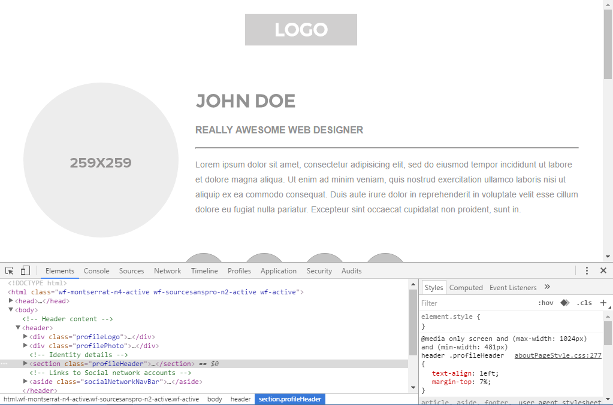

Some of this week's prac is devoted to you working on your assignment, but here's some help with CSS Layouts.
It's up to you whether you apply this work to a new page/site, to one of your previous pracs (About Me or Training Zone), or to your assignment.
In DreamWeaver, create a new HTML file, but instead of choosing "New Document", click "Starter Template" then Responsive Starters and choose a layout from the popout menu.
When asked to save the page, save the page in a new folder and click Copy on the "Copy Dependent Files" popup to copy all needed files into the new folder.
Take some time to study how this example works.
One way to do that is to save it and preview/open it in Chrome, then use the inspect element option when you right-click on part of the page... then navigate around the HTML code on the left, viewing the CSS code on the right:

Thankfully, as this page tells you, "the CSS for these layouts is heavily commented". E.g.
/* ~~ This fixed width container surrounds all other blocks ~~ */
.container {
width: 960px;
background-color: #FFFFFF;
margin: 0 auto; /* the auto value on the sides, coupled with the width, centers the layout */
}
So: